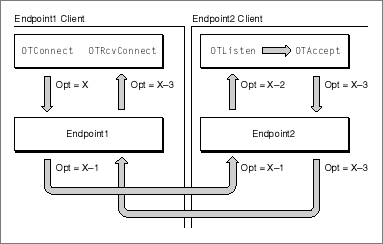

Legacy Document
Important: The information in this document is obsolete and should not be used for new development.
Important: The information in this document is obsolete and should not be used for new development.


Types of Options
Options can be association-related, privileged, read-only, or absolute.Association-related options are specified in relation to a particular connection, data transmission, or transaction; such options include information that is destined for the remote client. The client initiating the connection or transaction, or sending the datagram, initially defines the value of an association-related option; but the endpoint providers and the remote client can also negotiate this value (almost always to a less-desirable value). Figure D-1 illustrates the extreme case, in which each agent involved in the process of establishing a connection renegotiates an association-related option proposed by the active peer. When the client application calls the
OTConnectfunction, it specifies some value X for an option. The endpoint provider, Endpoint1, lowers this value before passing it to the remote endpoint, Endpoint2. The remote endpoint lowers the value further before notifying its client of the incoming connection. When theOTListenfunction returns, it specifies the option value X-2. The remote client decides to accept the connection using theOTAcceptfunction but also to lower it further to X-3. When the client that initiated the connection receives the remote client's response via theOTRcvConnectfunction, it can examine the option values to determine the final negotiated value for the option it requested. (By way of example, Figure D-1 shows that the negotiated value is lowered at each stage of the negotiation. Depending on the option being negotiated, however, a higher value could result from the degradation resulting from a negotiation.)Figure D-1 Negotiating an association-related option

By contrast, options that are non-association-related are negotiated solely between a client application and an endpoint provider. Such options do not contain information that involve the remote client. For example, the client application can specify an option that permits debugging or that increases the size of an internal receive buffer.
Table D-1 shows which Open Transport functions used to specify options can accept association-related options and which can accept both types of options for input and output parameters.
Table D-1 Open Transport endpoint functions and the types of options they accept
Function Input parameter Output parameter OTListenNot applicable Association-related OTRcvUDataNot applicable Association-related OTRcvURequestNot applicable Association-related OTRcvConnectNot applicable Both OTRcvUDErrNot applicable Both OTAcceptBoth Not applicable OTSndUDataBoth Not applicable OTSndURequestBoth Not applicable OTConnectBoth Not applicable OTOptionManagementBoth Not applicable Privileged options are options or option values that you can only set or change if you are a privileged client. In some cases, nonprivileged clients can read the value of a privileged option. Currently, the Mac OS does not have a privileged model, so this distinction is irrelevant.
Read-only options, as the name implies, are options whose values you can read but not change. For example, a protocol implementation might determine that a client cannot change the maximum length of a transport data unit; nevertheless, it would be important that the client be able to find out what the maximum length is in order to set up sufficiently large buffers for incoming data.
Whether an option is read-only depends on the status of the client and on the state of the endpoint. Depending on the implementation, an option might be
Options that are absolute requirements are options that a protocol must implement. This means that a protocol can neither ignore such an option nor negotiate it to a lower value. If the proposed option is an absolute requirement and the negotiated value is not the same as the proposed value, the negotiation fails, and any attempt to establish a connection or to send data also fails.
- read-only for all clients or just for nonprivileged clients
- negotiable in some endpoint states and read-only in other states
For example, for TCP/IP endpoints, the ISO quality-of-service options are negotiable when the endpoint is in the
T_IDLEandT_INCONstates, and read-only in all other states exceptT_UNINIT.